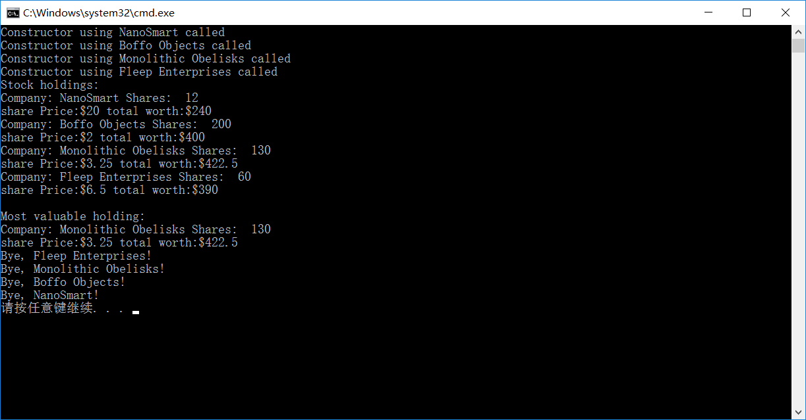

原文连接:https://www.cnblogs.com/moluoqishi/p/10692284.html
一、前言
在IC前端设计/验证领域，只会HDL远远不够。目前大多数项目使用已开发好的系统架构和IP Core，因此设计部分的工作量慢慢向系统集成和验证方向转移。而在集成和验证过程中，往往以各种脚本和面向对象的高级语言为主要工具。SystemVerilog已成为主流验证语言，相当于VerilogHDL与C++的结合体。故掌握C++基础是十分必要的。
二、类封装示例及解读
本文以《C++ Primer Plus》书中的一个简单的代码示例，讲讲自己对类封装的理解。出于练习、总结和记录的目的。OOP设计思想中：万物皆为某一类中的一个对象，类即为一群具有共性对象的抽象表示。每个类包含了数据成员和方法，成员是类包含的特性，而方法表示这一类的对象能完成哪些事情。以下示例描述的是股票这一类别。股票肯定包含股票数量和每股的价钱了。至于方法最起码可以买、卖，变动价格吧。
一般将类声明、方法定义分别放置在class_name.h和class_name.cpp文件中。这样的做法正符合了“封装”、“细节隐藏”的思想，让应用程序无需关注实现细节，这一点与C语言一致。先来看看class_name.h文件中类声明。


1 #ifndef STOCK00_H_
2 #define STOCK00_H_
3
4 #include <string>
5
6 class Stock
7 {
8 private:
9 std::string m_company;
10 long m_shares;
11 double m_share_val;
12 double m_total_val;
13 void set_tot() {m_total_val = m_shares * m_share_val;}//内联函数
14 public:
15 //two constructors
16 Stock();//default constructor
17 Stock(const std::string &co,long n = 0,double pr = 0.0);
18 //destructor
19 ~Stock();
20 void acquire(const std::string &co,long n,double pr);
21 void buy(long num,double price);
22 void sell(long num,double price);
23 void update(double price);
24 void show() const;//promises not to change invoking object
25 const Stock &topval(const Stock &s) const;
26 };
27
28 #endifStock类声明中包含了两个最常用的访问控制关键字pritive和public。class与C语言中结构体类似，只不过结构体数据成员均为public。pritive部分只能通过共有成员函数访问。m_company m_shares m_share_val和m_total_val分别代表公司名称、股票数量、股票单价以及总价。其中set_tot()为定义在类声明中的成员函数，称之为内联函数。该函数只能被公有成员函数调用。
公有成员函数acquaire buy sell update show和topval依次完成公司首次持股、买股票、卖股票、股价变动、显示某公司股票信息以及寻找两公司股票总价最高者的操作。有两类比较特殊的函数：构造函数Stock()和析构函数~Stock()。前者负责类对象的初始化，析构函数则是逆向操作，用于对象销毁时的清理工作，如释放动态分配内存等。
类方法定义：
#include <iostream> #include "stock00.h" Stock::Stock() { std::cout << "Default constructor called.\n"; m_company = "no name"; m_shares = 0; m_share_val = 0.0; m_total_val = 0.0; } Stock::Stock(const std::string &co,long n,double pr) { std::cout << "Constructor using " << co << " called\n"; m_company = co; if(n<0) { std::cout <<"Number of shares can't be negative;" << m_company << "shares set to 0.\n"; m_shares = 0; } else m_shares = n; m_share_val = pr; set_tot(); } Stock::~Stock() { std::cout << "Bye, " << m_company << "!\n"; } void Stock::acquire(const std::string &co,long n,double pr) { m_company = co; if(n<0) { std::cout << "Number of shares can't be negative; " << m_company << "shares set to 0.\n"; m_shares = 0; } else m_shares = n; m_share_val = pr; set_tot(); } void Stock::buy(long num, double price) { if(num<0) { std::cout << "Number of shares purchased can't be negative." << "Transcation is aborted.\n"; } else { m_shares += num; m_share_val = price; set_tot(); } } void Stock::sell(long num,double price) { using std::cout; if(num < 0) { cout << "Number of shares sold can't be negative. " << "Transcation is aborted.\n"; } else if(num > m_shares) { cout <<"You can't sell more than you have! " << "Transcation is aborted.\n"; } else { m_shares -=num; m_share_val = price; set_tot(); } } void Stock::update(double price) { m_share_val = price; set_tot(); } void Stock::show() const { std::cout << "Company: " << m_company << " Shares: " << m_shares << '\n' << "share Price:$" << m_share_val << " total worth:$" << m_total_val<< std::endl; } //选择总价最高的股票，返回该股票 const Stock & Stock::topval(const Stock &s) const { if(s.m_total_val > m_total_val) return s; else return *this; }
为了清晰看到构造和析构函数的隐式调用，使用cout打印相关信息。可以看到涉及到股价变动的操作时，均会调用set_tot()函数更新总股价。show()和topval()两个函数后有“const”标识符，表明两者是const成员函数。这种方式可以显示告知编译器：该函数不会改变传输实参。否则创建const类对象，且该对象调用show()函数时会报错。topval函数中返回的this指针会指向用来调用成员函数对象。
三、应用程序及结果分析
应用程序代码如下：
1 #include <iostream>
2 #include "stock00.h"
3
4 const int STKS = 4;
5 int main()
6 {
7 Stock stocks[STKS] = {//create object array of Stock class
8 Stock("NanoSmart",12,20.0),
9 Stock("Boffo Objects",200,2.0),
10 Stock("Monolithic Obelisks",130,3.25),
11 Stock("Fleep Enterprises",60,6.5)
12 };
13
14 std::cout << "Stock holdings:\n";
15 int st;
16 for (st=0;st<STKS;st++)
17 {
18 stocks[st].show();//show informations
19 }
20
21 //set top pointer to the first element
22 const Stock *top = &stocks[0];
23 for(st=1;st<STKS;st++)
24 {
25 top = &top ->topval(stocks[st]);
26 }
27 //now top points to the most valuable holding
28 std::cout <<"\nMost valuable holding:\n";
29 top->show();
30 return 0;
31 }亲切的main函数终于现身了！这里首先创建了一个Stock类的对象组成的数据stocks。其每个元素使用了显示方式调用构造函数。作为Stock类的对象stocks[0]-stock[3]自然可以调用类方法。之后stocks[st].show()处打印每隔公司的股票信息。接着找出总股价最高的公司，并显示信息信息。由于topval()函数仅能两两比较，故利用for循环找出最大者。精华都在这一句：top = &top ->topval(stocks[st]); 意思是：Stock类的指针top指向的Stock类对象与实参对象中总股价最大者的地址更新top。（确实有点绕）
最后看看打印结果：

打印结果表明，topval()函数成功索引到总股价最高的公司：Monolithic Obelisks。top->show()函数打印出其详细信息。最后打印了类对象数组元素对应的bye信息，证明析构函数被隐式调用。后续会在软件_脚本专栏中继续讲述C++基础示例、Linux Shell脚本等相关内容。